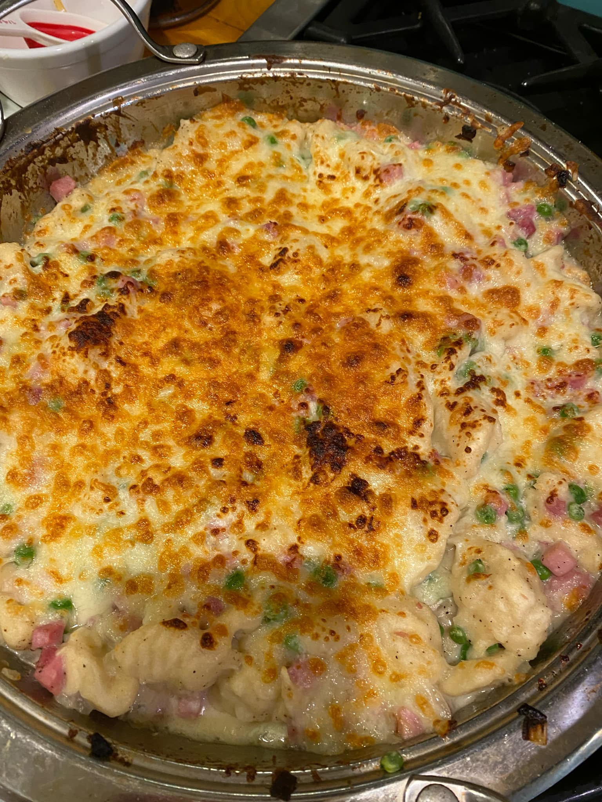
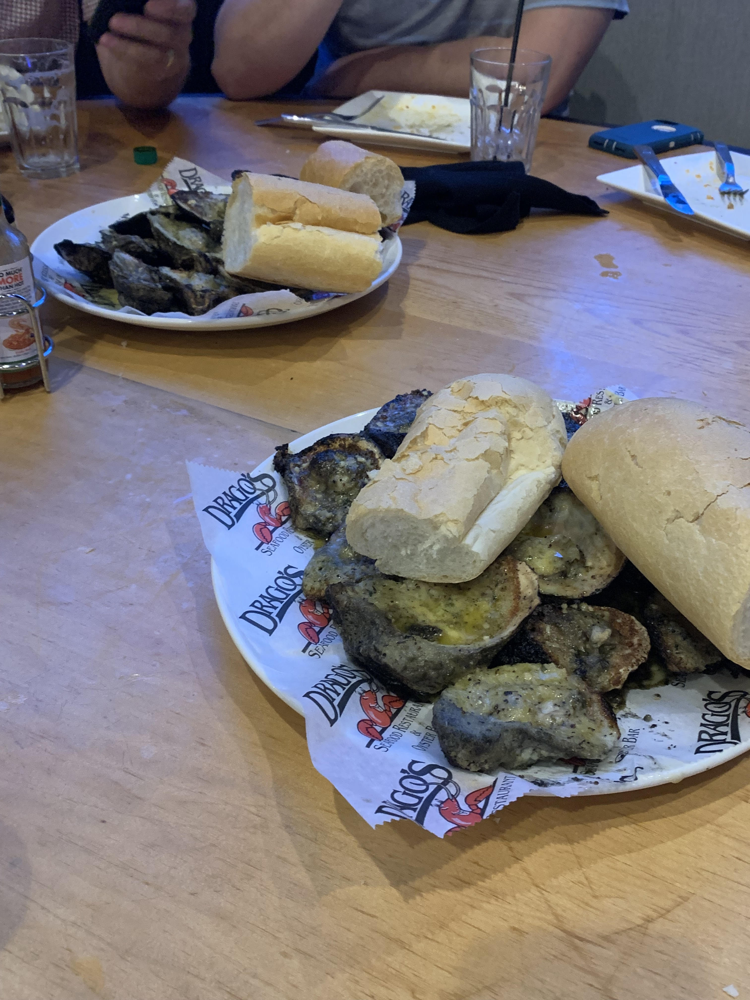

Foodie Fun
About Me Contact MeTraditional Thanksgiving Food is Overrated By: Lizzy Ryan, 10/10/24
Thanksgiving food traditionally consists of turkey, stuffing, mashed potatoes, cranberry sauce, ect. Every year my social media blows up with users absolutely dying over the idea of eating their Thanksgiving dinner. In my life so far, I have never enjoyed a traditional Thanksgiving dinner and most of my family would agree. This past year for Thanksgiving we decided to do something different, my mom decided that all the kids would pick one dish, any dish and we would have a huge hodgepodge of dishes that are our favorites. This not only allowed us to eat a meal together that consisted of all of our favorites, but also bond over what food we picked and why. We had dishes that spanned from sushi bake to wild rice with strawberries to a tres leches cake to ham and cheese gnocchi. It was a chaotic dinner that left us way too full and with so many leftovers but it was one of the best Thanksgiving that I have ever had. It was just the thing we needed as a family at the end of a long year, with all the kids coming together from school and from their lives to share a meal that they actually cared about was really special.
| Rate Traditional Dinner | Family A | Family B | Family C |
|---|---|---|---|
| Mom | 5 | 6 | 6 |
| Grandma | 7 | 6 | 8 |
| Child | 4 | 6 | 2 |
Best Restaurant Experience By: Lizzy Ryan, 10/11/24
My family used to travel all the time, we would have Senior trips when one of my siblings graduated high school. For mine we went to New Orleans. That trip was full of cool restaurants, swamp tours and ghost tours, to this day, one of my all time favorite trips that I have ever been on. One restaurant in particular was one of the coolest experiences. The restaurant is called Dragos Seafood Restaurant, we mainly went for their card-grilled oysters. We were sitting in the best place, right next to the grill where flames were shooting up five feet or higher grilling the oysters. We ordered about two dozen at first and they came out drenched in garlic butter with bread on the side, we also got sides of alligator bites and lobster mac and cheese. One of the best seafood experiences and meals I have ever had. I love seafood and when it is smokey and drenched in garlic butter, it makes the whole thing so much better. We ended up getting a couple more dozen after that and left Dragos feeling so satisfied and full. 10/10 experience, if I ever make it back to New Orleans this is definitely one of my go to places.
